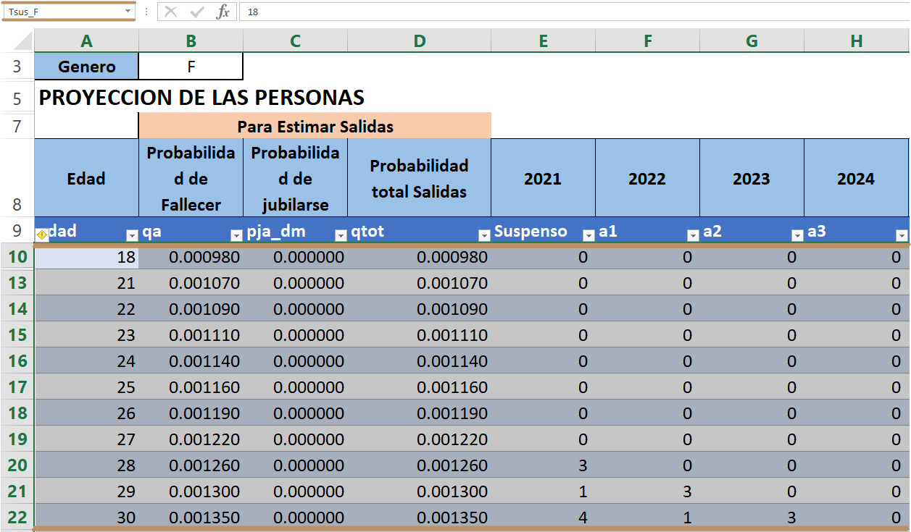
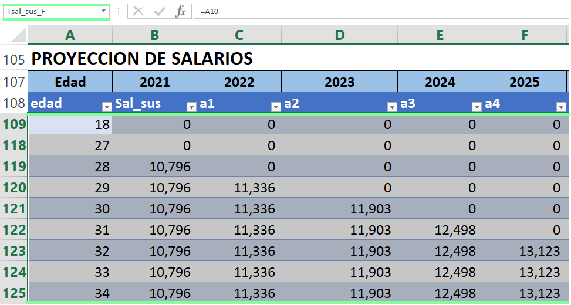
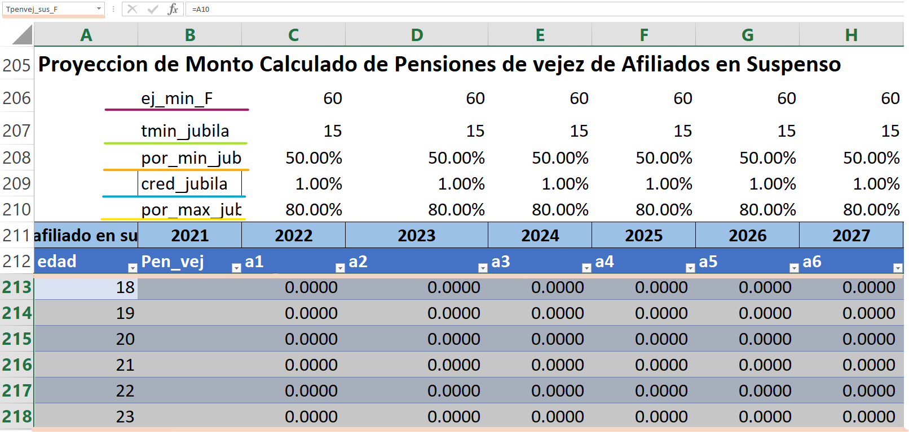
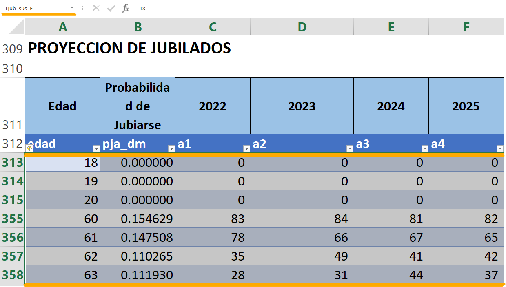

8 Suspenso
8.1 Suspensos Femeninos [Suspenso F]
En esta tabla se encuentra información detallada sobre la cantidad de personas femeninas en suspenso que se espera a lo largo de los años proyectados, también información sobre los salarios, un resumen de todos estos datos estimados, y otras proyecciones que son relevantes para el análisis, las cuales describimos a continuación.
8.1.1 Proyección de las personas
A esta tabla se le ha llamado “Tsus_F” está contiene las probabilidades de fallecer y jubilarse, así como los datos proyectados de las personas en suspenso de edad x a lo largo de los años j. Para el cálculo de estos parámetros se muestra la siguiente formula:
\[\begin{equation} Ca{nS}_{x,j}=Ca{nS}_{x-1,j-1}\times\left(1-{qa}_{x-1}-p{ja\_dm}_{x-1}\right) \end{equation}\]Donde:
\(Ca{nS}_{x,j}\) = cantidad de afiliados en suspenso de edad x en el año j.
\({CanS}_{x-1,j-1}\) = cantidad de afiliados en suspenso de edad x-1 en el año anterior.
\({qa}_x\) = probabilidad de que un activo fallezca a la edad x.
\(p{ja\_dm}_x\) = probabilidad de decremento múltiple de que un activo se jubile a la edad x.

8.1.2 Proyección De Salarios
A esta tabla se le llamado “Tsal_sus_f”, y contiene la proyección de los salarios para un suspenso, para ello se hace uso de la fórmula 4.3.4 Sueldo promedio de los afiliados en suspenso proyectado, que se encuentra en (Nota Técnica de Proyección de Flujos del Régimen del Seguro de Previsión Social, a diciembre 2020)
\[\begin{equation} {Sal\_sus}_{x,j}=\ {Sal\_sus}_{x-1,j-1}\times(1+{tincre\_sal}_j)\ \end{equation}\]Donde:
\({Sal\_sus}_{x,j}\) = salario promedio de los afiliados en suspenso de edad x en el año j.
\({Sal\_sus}_{x-1,j-1}\) = salario promedio de los afiliados en suspenso de edad x-1 en el año anterior.
\({tincre\_sal}_j\) = tasa de incremento salarial en el año j.

8.1.3 Proyección de Monto Calculado de Pensiones de vejez de Afiliados en Suspenso
A esta tabla se le ha llamado “Tpenvej_sus_F” y estos parámetros se determinan haciendo uso de la siguiente formula, la cual nos devuelve un porcentaje que tiene que estar entre el porcentaje mínimo y máximo de transferencia de pensiones y dicho valor es multiplicado por el salario de los afiliados en suspenso.
\[\begin{align} {Pen\_vs}_{x,j} &= \left[\left({por\_min\_jub}_j\right)+\left({tcot\_sus}_{x,j}- \right. \right.\nonumber \\ &\qquad \left. \left. {tmin\_jub}_j\right)\times{cred\_jubila}_j\right]\times{Sal\_sus}_{x,j} \end{align}\]Donde:
\({Pen\_vejs}_{x,j}\) = monto proyectado de pensión por vejez de afiliados en suspenso de edad x para el año j.
\({por\_{min\_{jub}}}_j\) = porcentaje mínimo de transferencia de pensión en el año j.
\({tcot\_sus}_{x,j}\) = tiempo de cotización de afiliados en suspenso de edad x para el año j.
\(t{min\_{jub}}_j\) = tiempo mínimo de cotización.
La ecuación presentada anteriormente y descrita en la fórmula de Excel se muestra a continuación.

8.1.4 Proyección De Jubilados
Este parámetro representa la cantidad de afiliados en suspenso que se jubila a lo largo de los años, a dicha tabla se le llamado “Tjub_sus_M” para determinar estos valores hacemos uso de la fórmula 4.3.2 Cantidad de afiliados en suspenso que se jubila que se encuentra en (Nota Técnica de Proyección de Flujos del Régimen del Seguro de Previsión Social, a diciembre 2020):
Para dicho cálculo realizamos el producto de \([pja\_dm]\) probabilidad de jubilarse, \([{CanS}_{x-1,j-1}]\) cantidad de afiliados jubilados en suspenso del año anterior y edad x-1 y multiplicado por el factor \([activar\_susp]\)
\[\begin{equation} {jub\_sus}_{j,x}={pja\_dm}_x\times{CanS}_{x-1,j-1}\times activar\_susp \end{equation}\]Donde:
\({CanS}_{x-1,j-1}\) = cantidad de afiliados en suspenso de edad x-1 en el año anterior.
\(p{ja\_dm}_x\) = probabilidad de decremento múltiple de que un activo se jubile a la edad x.
\(activar\_susp\) = factor donde se toma en cuenta la población en suspenso.

8.1.5 Proyección Tiempo Cotizado De Afiliadas En Suspenso
A esta tabla se le ha llamado “Ttcot_sus_F” esta contiene el tiempo promedio de cotización de un afiliado en suspenso por cada edad y año proyectado.
\[\begin{equation} {tcot\_sus}_{x,j}={tcot\_ini}_{x-1,j-1} \end{equation}\]Donde:
\({tcot\_ini}_{x,j}\) = tiempo de cotización inicial de afiliados en suspenso de edad x-1 para el año anterior.
NOTA: Todos los parámetros y tablas antes descritas siguen el mismo patrón y proceso para el caso masculino, habiendo ligeros cambios en los nombres siendo este cambio por la inicial del género (M).